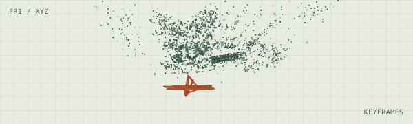
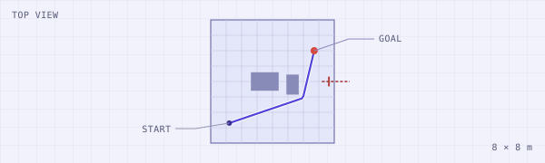

단안 영상 추적
ORB-SLAM3
794 / 798 프레임TUM fr1/xyz에서 추적한 프레임. 희소 지도점 3,381개.
실내 영상이 지도가 되고,
로봇은 목표를 찾아 멈춥니다.
WASD 이동 ← → 회전 · 조이스틱 이동 · 바닥을 눌러 이동
카메라가 움직이면 같은 공간을 여러 각도에서 관측합니다.
TUM fr1/xyz
794 / 798 프레임TUM fr1/xyz에서 추적한 프레임. 희소 지도점 3,381개.

8.188 m소화기 관측 지점까지의 최단 경로. 벽 너머로 이동을 요청하면 경계에서 정지했습니다.
현장 촬영 후 검증 예정